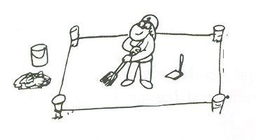
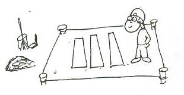
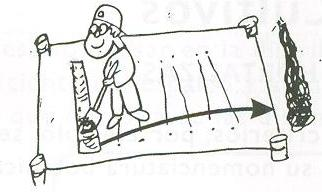

Construcción de la huerta
Los 8 pasos para la construcción de la huerta son los siguientes:
- Clavar las estacas en cada una de las esquinas del lugar elegido para realizar las camas altas y unirlas con una piola formando un rectángulo.

- Limpiar la superficie, sacando piedras, vidrios y basura. Sacar el pasto y los yuyos con azada, apilándolos para reciclarlos como materia orgánica.

- Marcar las camas altas, delimitando zonas de 1 metro de ancho y no más de 15 metros de largo (en general se hacen de 6 metros), separadas por caminos de 50 centímetros.

- Sacar la tierra, con una profundidad de 15 a 30 centímetros y colocarla en un costado del lugar elegido.

- Remover el fondo con una pala de dientes y rellenar con materia orgánica: hojas, palos, abono, basura orgánica.

- Colocar la tierra que se sacó de otra cama alta sin dar vuelta los terrones, continuando de esta forma hasta el final de la superficie marcada (en la última cama alta se coloca la tierra que se sacó al comienzo).

- El cantero debe quedar más alto en el medio que en los bordes y se realiza una canaleta rodeando la cama alta para que corra el agua.

- Se puede cubrir con materiales que lo protejan del sol y la lluvia (pasto, paja, aserrín).